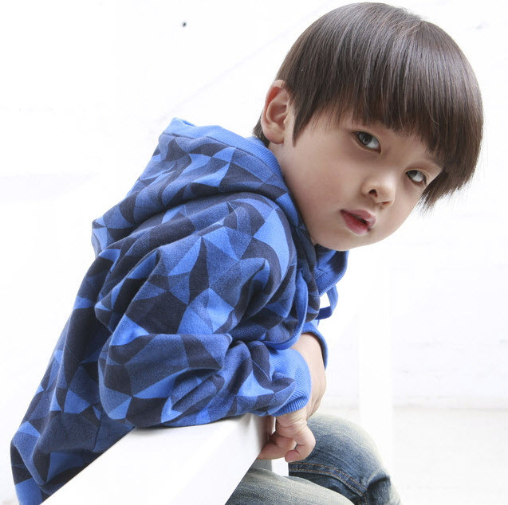

六一儿童节，也叫“六一国际儿童节”，每年的6月1日举行，是全世界少年儿童的节日。
1942年6月，德国法西斯枪杀了捷克利迪策村16岁以上的男性公民140余人和全部婴儿，并把妇女和90名儿童押往集中营。村里的房舍、建筑物均被烧毁，好端端的一个村庄就这样被德国法西斯给毁了。
为了悼念利迪策村和全世界所有在法西斯侵略战争中死难的儿童，1949年11月，国际民主妇女联合会在莫斯科举行理事会议，中国和各国代表愤怒地揭露了帝国主义分子和各国反动派残杀、毒害儿童的罪行。为了保障世界各国儿童的生存权、保健权和受教育权，为了改善儿童的生活，会议决定以每年的6月1日为国际儿童节。